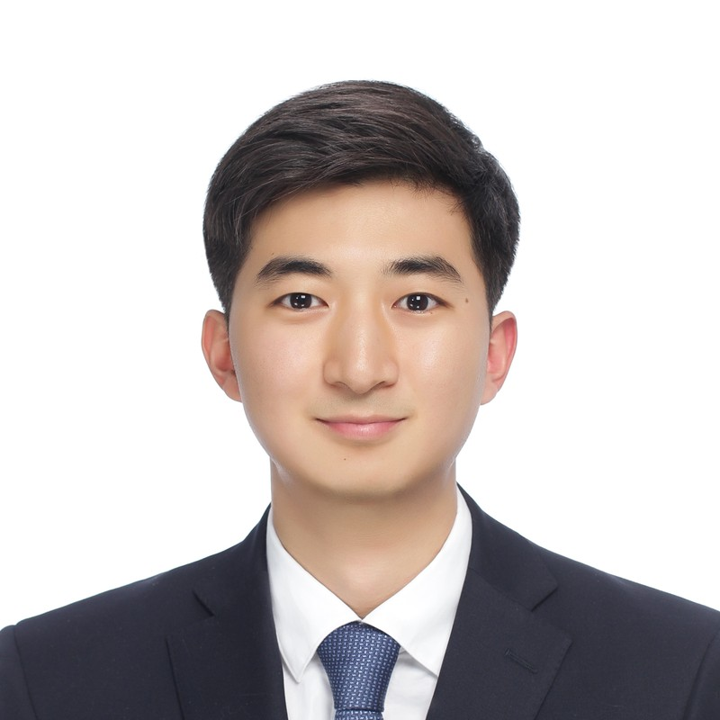
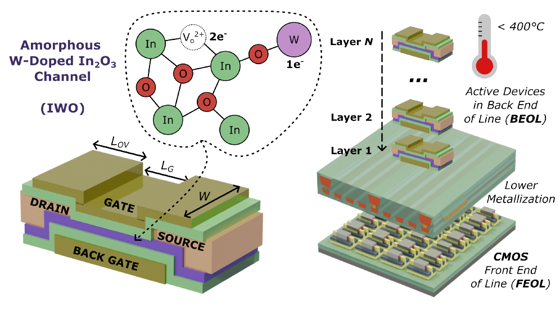
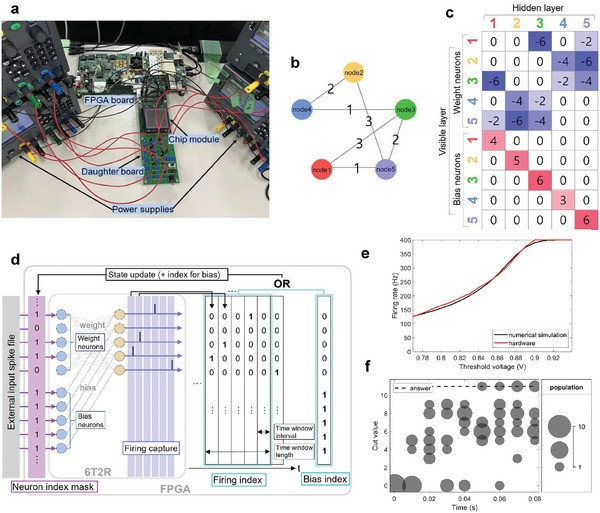
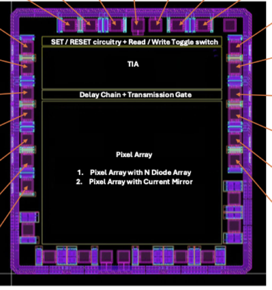

|
Seongwon (Gabriel) Yoon
I am a Ph.D. student in Electrical and Computer
Engineering at
Georgia Tech,
advised by
Prof. Shimeng Yu
in the
Laboratory for Emerging Devices and Circuits. My research focuses on optical switch and interconnect
co-design with silicon photonics for scalable AI systems.
I received my B.S. in Materials Science and Engineering
from
Seoul National University,
Summa Cum Laude.
Email
/
CV
/
Scholar
/
LinkedIn
/
Github
|

|
Research Interests
My research focuses on silicon photonics and
optical interconnects for AI infrastructure. I
study how photonic integrated circuits (PICs) can replace
copper across the scale-up and scale-out hierarchy of
AI clusters, including co-packaged optics (CPO),
near-packaged optics, and wafer-scale optical
interconnects.
On the system side, I work on optical link modeling and
cross-layer analysis of power, thermal tuning overhead,
and performance for large-scale LLM training. On the
device side, I explore CMOS-compatible emerging devices
such as ferroelectrics and oxide transistors for
photonic–electronic integration, along with
modulator and transceiver device physics.
Keywords: Silicon Photonics, Optical
Interconnects, Optical Device Modeling, AI Infrastructure
Publications
|
|

|
CMOS+X: Stacking Memories based on Oxide Transistors upon GPGPU Platforms
Faaiq Waqar, Ming-Yen Lee, Seongwon Yoon, Seongkwang Lim, Shimeng Yu
Proceedings of the International Symposium on Memory Systems (MEMSYS), pp. 64–77, 2025.
BEOL-compatible amorphous oxide semiconductor (W-doped In2O3) gain-cell memories stacked monolithically above GPGPU logic. AOS 1T1C L2 caches deliver up to 5.1× performance per watt and 6.1× memory density over an HD-SRAM baseline.
|
|

|
Solving Max-Cut Problem Using Spiking Boltzmann Machine Based on Neuromorphic Hardware with Phase Change Memory
Yu Gyeong Kang, Masatoshi Ishii, Jaeweon Park, Uicheol Shin, Suyeon Jang, Seongwon Yoon, Mingi Kim, Atsuya Okazaki, Megumi Ito, Akiyo Nomura, Kohji Hosokawa, Matthew BrightSky, Sangbum Kim
Advanced Science, vol. 11, no. 46, 2406433, 2024.
Max-Cut problem solver using the IBM neuromorphic chip (phase-change material GST based non-volatile memory synapse) hardware-aware simulator.
|
|

|
RRAM-Integrated CMOS Image Sensor Pixel Readout Chip
180 nm CMOS, 3-metal MPW through the
National NanoFab Center (NNFC),
Korea
Laboratory for Emerging Devices and Circuits, Georgia Tech, 2025.
|
Skills
Photonic & Electromagnetic Simulation:
Ansys Lumerical (FDTD, MODE, INTERCONNECT)
Device & Multiphysics Simulation:
TCAD, Ansys Mechanical (thermal and structural analysis)
Scientific Computing:
MATLAB
|
Graduate Coursework
Courses taken at Georgia Tech.
Networking
- ECE 8803 Photonics for AI
- CS 7260 Internetworking Architectures and Protocols
- ECE 6607 Computer Communication Networks
- ECE 6612 Computer Network Security
VLSI & Semiconductor Devices
- ECE 6133 Physical Design Automation of VLSI Systems
- ECE 6465 Memory Device Technologies and Applications
- ECE 8803 Advanced Logic Transistors
Computer Architecture & ML Systems
- ECE 6100 Advanced Computer Architecture
-
ECE 8803 Hardware-Software Co-Design for Machine Learning
Systems
Machine Learning & AI
- CS 7750 Mathematical Foundations of Machine Learning
- ECE 8803 Generative and Geometric Deep Learning
|
|